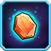
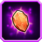
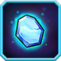
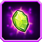

Runestone Overview
Runestones are a further extension of the Upgrade and Customization Features that Soul Hunters offers. Once a player has completed Chapter 16 of the Campaign, Runestones can be Crafted and Polished at The Forge. Runestones add various Bonus Stats that can be customized. There are 3 types of Runestones: Sunstones, Moonstones and Starstones. In addition, there are also 3 different Quality Levels: Common, Rare and Precious.
The Crafting and Polishing process can be thought of as a combination of Forge Bonus Stats on a Signature Item and Heroic Academy Trees that can be equipped on any Awakened Hero.  or
or  can be spent for a chance at changing the Runestone Bonus, but instead of static Stat Boosts, like on a Signature Item, you will be able to choose which bonuses get applied to the Awakened Hero you want.
can be spent for a chance at changing the Runestone Bonus, but instead of static Stat Boosts, like on a Signature Item, you will be able to choose which bonuses get applied to the Awakened Hero you want.
The Stat Boosts are the same types offered by the Heroic Academy and Runestone Bonuses stack in addition to those applied from the Academy Talents. Imagine combining the +21% Crit Damage from the Academy with the +22% Crit Damage from a Precious Sunstone! Now you can turn your Glass Cannon into a Glass Thermonuclear ICBM or further bolster your Front Line Tank's Armor and Health. Upon completing all Chapter 17 Stages with 3 Stars you will receive a reward of 3 Runestones:
Precious Sunstone
Rare Moonstone
Common Starstone
Runestones awarded for 21 Stars on Chapter 17
Crafting Runestones
Crafting Runestones requires special resources called Essences. Each type of Runestone requires a different type of Essence. The Essence types are: Sunlight , Moonbeam and Stardust . Runestone Essences can be farmed from certain Stages in Chapter 17 and are also available via both Free and Purchase Events. Crafting a Runestone is instantaneous with no wait time and no cooldown period. Precious Runestones also require another resource in addition to the Runestone Essence called Gaia Stones . Gaia Stones can be crafted by collecting 60 Gaia Stone Fragments. Currently the fragments are only available by completing the Daily Raid Quest. Occasionally, Gaia Stones are also available via both Free and Purchase Events. When a Runestone is crafted it will be assigned a random Stat Boost which can be modified by Polishing the Runestone.
Runestone Crafting Costs
| Sunstone | Moonstone | Starstone | |
|---|---|---|---|
| Common | 300 300k |
300 300k |
300 300k |
| Rare | 900 900k |
900 900k |
900 900k |
| Precious | 1800 1 |
1800 1 |
1800 1 |
Runestones may also be dissolved into its base essence. To dissolve a Runestone it must be removed from a Hero or already in your bag. From the bag, simply tap the dissolve button and the Runestone will be permanently destroyed and you will be returned a portion of the correspoding essence. Currently, there is no way to fuse or upgrade the quality of Runestones. Due to the significantly greater Stat Boosts, it is recommended to save and craft only Precious Runestones.
Runestone Dissolve Refund
| Sunstone | Moonstone | Starstone | |
|---|---|---|---|
| Common | 210 | 210 | 210 |
| Rare | 420 | 420 | 420 |
| Precious | 1260 | 1260 | 1260 |
Equipping Runestones
Runestones can only be equipped by Awakened Heroes. There is also a Star Rating requirement as well. 3 Star Heroes can equip 1 Runestone, 4 Star Heroes can equip 2 Runestones and 5 Star Heroes can equip all 3 Runestones. Each Runestone type is also assigned to the same slot and as such not only are 3 and 4 Star Heroes limited to the number of Runestones, but also the type of Runestones.
Runestones, unlike other equippable items, are not bound to the Hero once equipped. This means you can remove them if needed. The cost to remove is 20  per Runestone. Runestones must be removed in order to be polished. Because it takes a great amount of time to acquire the necessary components to craft Runestones, one great benefit to this feature is being able to rotate the same stone to different Heroes for Raids or Hall of Legends Bosses.
per Runestone. Runestones must be removed in order to be polished. Because it takes a great amount of time to acquire the necessary components to craft Runestones, one great benefit to this feature is being able to rotate the same stone to different Heroes for Raids or Hall of Legends Bosses.
Runestone Equip Slots
Example: Hero with 3 Precious Runestones equipped
| Sunstone | Sunstone | Sunstone |
| -- | Moonstone | Moonstone |
| -- | -- | Starstone |
Polishing Runestones
Polishing allows you to change the Stat Bonus of the Runestone. This process is similar to using The Forge to upgrade a Hero's Signature Item. When you polish a Runestone you can choose to spend either  or
or  for a new random Stat Bonus. A different Stat Boost is not guarenteed, however, and as such Polishing can be quite costly. Spending
for a new random Stat Bonus. A different Stat Boost is not guarenteed, however, and as such Polishing can be quite costly. Spending  has a better chance of receiving a rarer Stat Boost. Once you tap the polish button there is no going back. The price will be deducted and the new Stat Bonus(if one is rolled) will be applied.
has a better chance of receiving a rarer Stat Boost. Once you tap the polish button there is no going back. The price will be deducted and the new Stat Bonus(if one is rolled) will be applied.
| Polishing Cost | ||
|---|---|---|
| Common | 300k | 20 |
| Rare | 600k | 25 |
| Precious | 900k | 30 |
Multi-Polish is similar to the Auto-Forge. You can select several parameters and execute a series of polishes auto-magically! The options that can be decided upon for Multi-Polish are: 10, 20 or 50 polishes;  or
or  cost; and also an optional stopping condition. If no condition is selected or the condition is not met before all the polishes are used, a list of all the unique Stat Boosts that were rolled will be displayed. The Stat Boost you want can be selected and applied or discarded. If the condition is met before all the polishes are used, however, only the cost per polish performed will be deducted. Polishing a Runestone can be quite costly, but Multi-Polish offers more benefits than regular polishing.
cost; and also an optional stopping condition. If no condition is selected or the condition is not met before all the polishes are used, a list of all the unique Stat Boosts that were rolled will be displayed. The Stat Boost you want can be selected and applied or discarded. If the condition is met before all the polishes are used, however, only the cost per polish performed will be deducted. Polishing a Runestone can be quite costly, but Multi-Polish offers more benefits than regular polishing.
Select a desired Stat Bonus
Example: Multi-Polish stops if condition is met
Stat Tables
Each type of Runestone has a specific range of Stat Boosts available. All 3 types share the 3 Basic Stat Boosts of Max Health, Physical Attack and Magic Attack. These are the only 3 Stats that can be increased up to 3 times by equipping more than one Runestone, however, the specific Stat Boosts available to each Runestone type will be more useful. Stat Boosts have rarities as noted by the color of the values in the tables. Common, Rare and Very Rare. The more rare the Stat Boost, the less likely each Polish will provide that type of Boost.
| Sunstone Stats |  |  | |
|---|---|---|---|
| Max Health | 600 | 1500 | 3000 |
| Physical Attack | 50 | 120 | 260 |
| Magic Attack | 50 | 120 | 260 |
| Lifesteal | 6 | 12 | 22 |
| Physical Crit Damage | 8% | 16% | 22% |
| Magic Crit Damage | 8% | 16% | 22% |
| DoT Bonus | 4% | ? | 14% |
| Physical Toughness | 5% | 9% | 15% |
| Magic Toughness | 5% | 9% | 15% |
| Moonstone Stats |  | ||
|---|---|---|---|
| Max Health | 600 | 1500 | 3000 |
| Physical Attack | 50 | 120 | 260 |
| Magic Attack | 50 | 120 | 260 |
| Physical Pierce | 65 | 110 | 200 |
| Magic Pierce | 65 | 110 | 200 |
| Physical Resistance | 2% | 4.5% | 7.5% |
| Magic Resistance | 2% | 4.5% | 7.5% |
| Silence Resistance | 12% | 18% | 28% |
| Time Under Control | -8% | -12% | -18% |
| Energy Bonus | 4% | 6% | 10% |
| Energy Efficiency | 4% | 6% | 10% |
| Starstone Stats |  | ||
|---|---|---|---|
| Max Health | 600 | 1500 | 3000 |
| Physical Attack | 50 | 120 | 260 |
| Magic Attack | 50 | 120 | 260 |
| Physical Crit Rate | 60 | 100 | 160 |
| Magic Crit Rate | 60 | 100 | 160 |
| Accuracy (Hit Bonus) | 25 | 50 | 100 |
| Physical Armor | 65 | 110 | 200 |
| Magic Armor | 65 | 110 | 200 |
| Dodge Rating | 25 | 50 | 100 |
| Healing | 4 | ? | 14 |